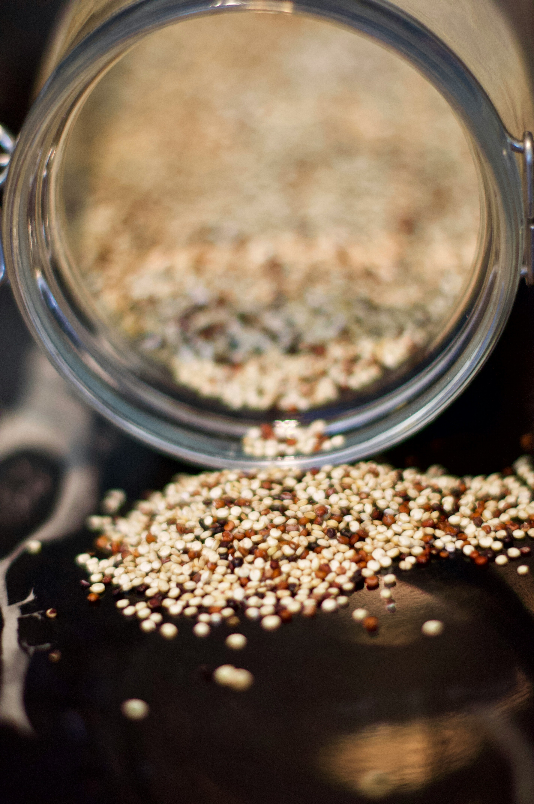

Home
Quinoa

Quinoa: an ancient grain full with nutrition
Quinoa is a complete protein and rich in fiber. Give this recipe a go if you dare
Ingredients
- 1/2 cup quinoa
- 1 cup water
- 1 roma tomato
- 1/8 red onion
- 1 garlic clove
- 1/2 tablespoon olive oil
- A pinch of salt
- Heat pot to medium heat and add olive oil, chopped garlic, onion, and tomato
- Make sure to stir occasionally to avoid sticking
- Once tomato is broken down, add rinsed quinoa and water
- Cover pot and after 10 minutes, take lid off and add salt
- Once most of the water evaporates, you can turn off the stove and serve the quinoa